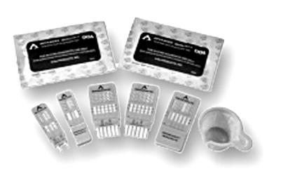
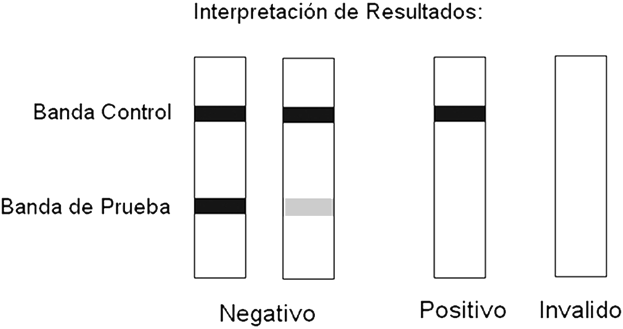

Accutrack-doas
DESCRIPCIÓN: Prueba de un solo paso para la detección sencilla o múltiple de drogas: anfetamina (AMP), cocaína (COC), opiatos (MOR), marihuana (THC), metanfetaminas (MET), benzodiacepinas (BZD), barbitúricos (BAR), fenciclidina (PCP) y metadona (MED).

La prueba ACCUTRACK-DOAS es una prueba rápida cualitativa de un solo paso para la detección múltiple de drogas de abuso (DOAs) y/o sus analitos en muestras de orina humana, mediante un inmunoensayo competitivo. Su único diseño patentado permite una amplia variedad de combinaciones de drogas para ser detectadas de una forma sencilla (en un solo paso).
FORMATO: Cassette, tiras, combinación de drogas en cartucho (DOA-3; COC. THC y AMP), (DOA-5, COC, THC.AMP, MOR, MET).
MUESTRA: Orina.
INTERPRETACIÓN:

TIEMPO DE RESULTADOS: Leer el resultado entre 3 y 8 minutos.
PRESENTACIÓN: 25 y 50 pruebas.
CADUCIDAD: 18 meses.
ALMACENAMIENTO: 2 a 30°C.
Registro: 0579R2013 SSA
DATOS COMPLEMENTARIOS: Para mayores informes comunicarse a:
ACCUTRACK, S.A. DE C.V.
Teléfonos: (55) 5524-4481, 5524-2644, 5524-4575
e-mail: ventas@accutrack.com.mx
www.accutrack.com.mx